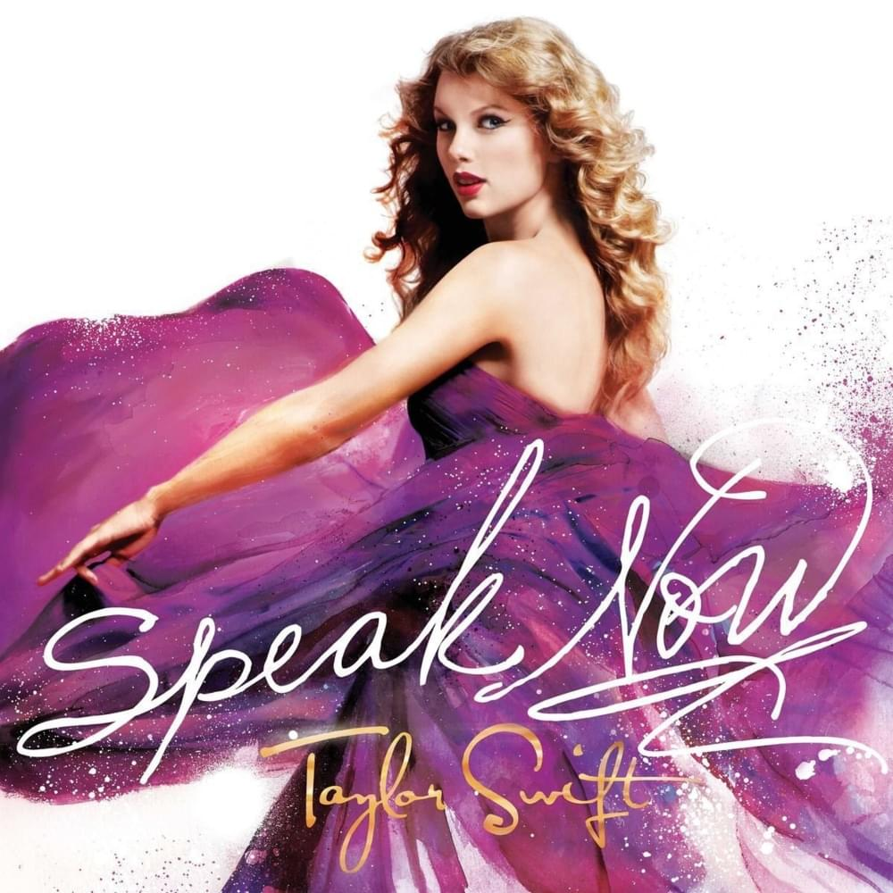

| Home | Youtube | About |
|
Taylor Swift - Enchanted There I was again tonight. Forcing laughter, faking smiles. Same old tired, lonely place. Walls of insincerity, shifting eyes and vacancy, Vanished when I saw your face. All I can say is, it was enchanting to meet you. Your eyes whispered, "Have we met?" 'Cross the room your silhouette. Starts to make its way to me. The playful conversation starts. Counter all your quick remarks. Like passing notes in secrecy. And it was enchanting to meet you. All I can say is, I was enchanted to meet you. This night is sparkling, don't you let it go. I'm wonderstruck, blushing all the way home. I'll spend forever wondering if you knew. I was enchanted to meet you. The lingering question kept me up. 2 AM, who do you love? I wonder 'til I'm wide awake. And now I'm pacing back and forth. Wishing you were at my door. I'd open up and you would say, "Hey" It was enchanting to meet you. All I know is, I was enchanted to meet you. This night is sparkling, don't you let it go. I'm wonderstruck, blushing all the way home. I'll spend forever wondering if you knew. That this night is flawless, don't you let it go. I'm wonderstruck, dancing around all alone. I'll spend forever wondering if you knew. I was enchanted to meet you. This is me praying that. This was the very first page. Not where the story line ends. My thoughts will echo your name, until I see you again. These are the words I held back, as I was leaving too soon. I was enchanted to meet you. Please don't be in love with someone else. Please don't have somebody waiting on you. Please don't be in love with someone else. Please don't have somebody waiting on you. This night is sparkling, don't you let it go. I'm wonderstruck, blushing all the way home. I'll spend forever wondering if you knew. This night is flawless, don't you let it go. I'm wonderstruck, dancing around all alone. I'll spend forever wondering if you knew. I was enchanted to meet you. Please don't be in love with someone else. Please don't have somebody waiting on you. |  | ||||
| @Copyright 2023 by Aprilisa | |||||